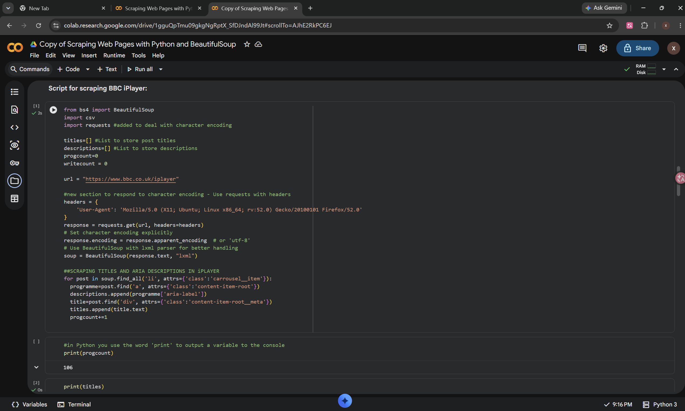
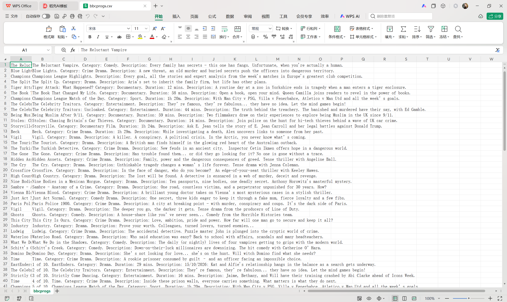

Looking beyond the webpage.
Learning to turn programme listings into data—and to question what the results actually represent.
What I did
I used the workshop’s Python notebook in Google Colab to collect programme titles and descriptions from BBC iPlayer and export them as a CSV file. I then began adapting the process to ITV by inspecting its programme cards and identifying where their information was stored.


What challenged me
I initially thought changing the website URL would be
enough. Inspecting ITV showed me that its structure
was different: programme names and descriptions were
combined in an aria-label, rather than
stored in separate title elements. I also selected a
decorative background layer before finding the
programme card I needed.
What I learned
My BBC export contained 106 records but only 89 distinct titles. This helped me understand that a row is not necessarily a unique programme, and repeated entries may reflect how content appears across different sections. Successfully exporting a file also does not prove that everything on the page has been captured.
What comes next
Test the adapted ITV code against the visible page, check for missing or repeated records, and record the collection date and scope. I want to understand what my dataset leaves out, as well as what it contains.